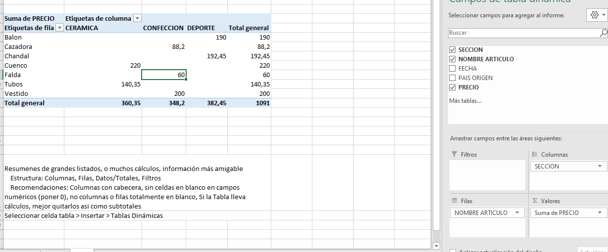
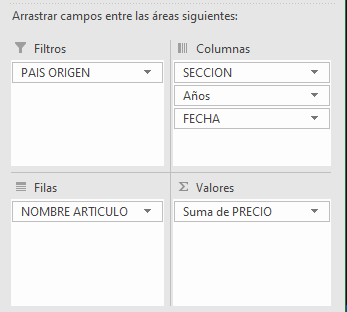
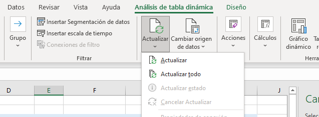
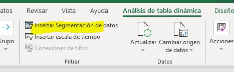
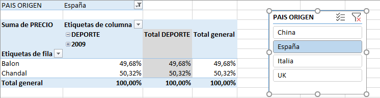
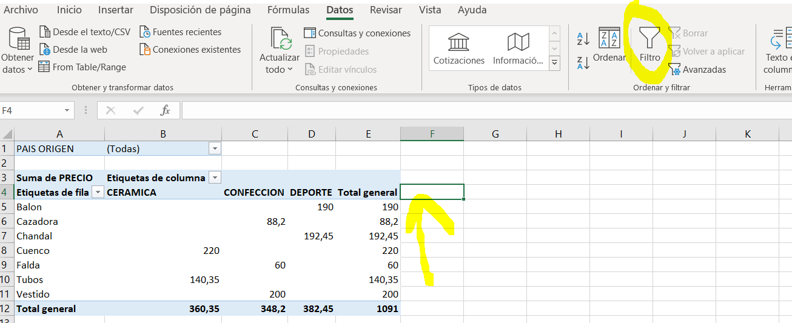

EXCEL TABLAS DINÁMICAS
//TABLAS DINÁMICAS VID 31
Resumenes de grandes listados, o muchos cálculos, información más amigable
Estructura: Columnas, Filas, Datos/Totales, Filtros
Recomendaciones: Columnas con cabecera, sin celdas en blanco en campos numéricos (poner 0), no columnas o filas totalmente en blanco, Si la Tabla lleva cálculos, mejor quitarlos asi como subtotales
//CREACION
Seleccionar celda tabla > Insertar > Tablas Dinámicas
Poner campos en columnas, filas, valores, filtros.
Dinamica = se puede modificar y se actualiza automáticamente

// FILTROS VID 32
Al añadirlos, se abre nueva fila para elegir. Seleccionar un elemento o varios
//VALORES
Campo de valores suele ser de operaciones. click en el y click en configuracion de campo de valor (Promedio, recuento, contar nums, )
Ej: contar números-> Cuantas celdas con valores numéricos
//mostrar valores como - sin cálculo
porcentaje del total de columnas por ejemplo
Hay muchas combinaciones interesantes
//Añadir varias secciones a columnas
Fecha, se pueden mostrar año, trimestres.. mucha información

//Refrescar datos / Actualizar
tras cambios en BD, se actualiza haciendo clic en tabla, luego Arriba Análisis de tabla dinámica > Actualizar
Actualizar: Datos
Actualizar todo: Cambios en estructura

//SEGMENTACION DE DATOS
Análisis de tabla dinámica > Insertar segmentacion de Datos
Crea tabla flotante Ej elegimos pais, filtra
Para borrar clicar en ella y dar a SUPR
Varias segmentaciones a la vez ok


//Escala de tiempo
Análisis de tabla dinámica > Insertar Escala de tiempo
Permite filtrar por intervalos de tiempo (meses, años, trimestres) de manera gráfica
Uso de varias ok
Años Meses trimestres
Por ejemplo: Elegir los datos de Abril de 2018
Se habilita ficha
//AutoFiltros
Seleccionar celda vacia a la derecha de la cabecera y luego Datos > Filtro
